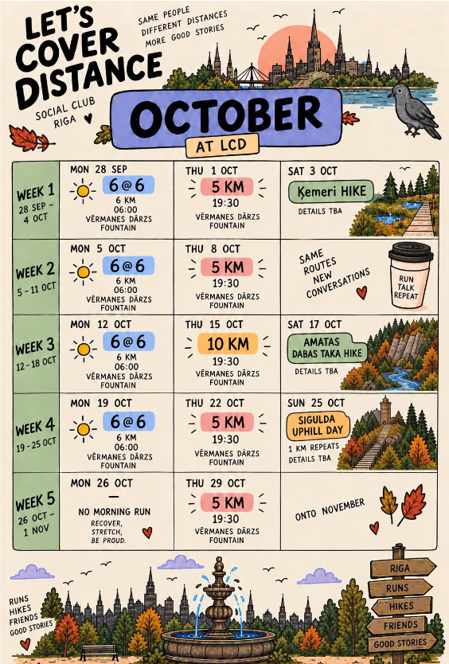

MONDAY MORNINGS
6 @ 6
Start the week on the right foot.
6 km06:00
Vērmanes Dārzs fountain
A slower start on 26 Oct — no morning run.
A LITTLE MOVEMENT. GOOD COMPANY.

Same people. Different distances.
More good stories.
A FEW KILOMETRES. A LOT TO TALK ABOUT.
FRESH AIR IS ON THE CALENDAR
Start the week on the right foot.
Vērmanes Dārzs fountain
A slower start on 26 Oct — no morning run.
Same routes. New conversations.
Vērmanes Dārzs fountain
Going a little further: 10 km on 15 Oct.
A change of scenery, together.
Times & meeting details to be announced.
Mon 28 Sep 6 km · 06:00
Thu 1 Oct 5 km · 19:30
Sat 3 Oct Ķemeri hike · Details TBA
Mon 5 Oct 6 km · 06:00
Thu 8 Oct 5 km · 19:30
Mon 12 Oct 6 km · 06:00
Thu 15 Oct 10 km · 19:30
Sat 17 Oct Amatas dabas taka · Details TBA
Mon 19 Oct 6 km · 06:00
Thu 22 Oct 5 km · 19:30
Sun 25 Oct Sigulda · 1 km uphill repeats · Details TBA
Mon 26 Oct No morning run — recover & stretch
Thu 29 Oct 5 km · 19:30